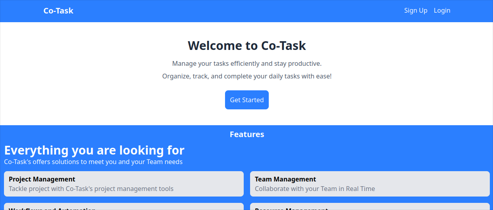
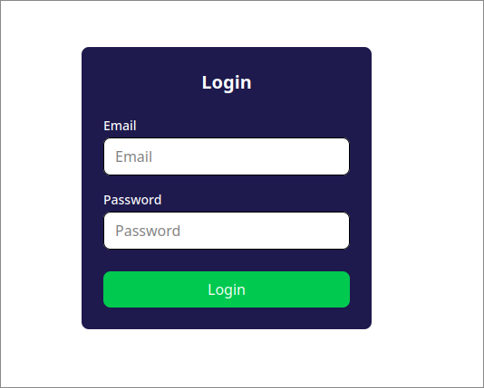
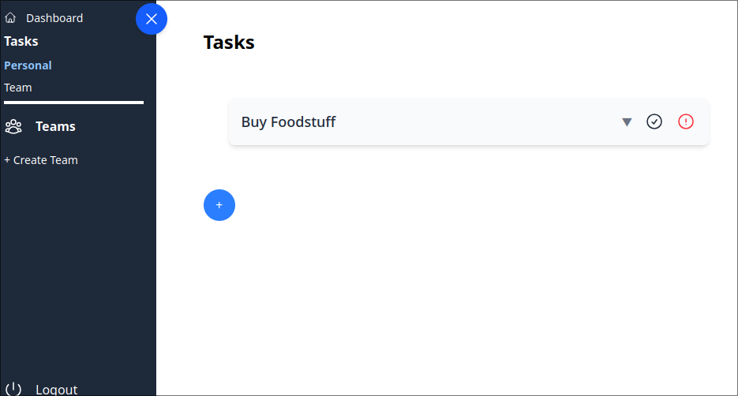
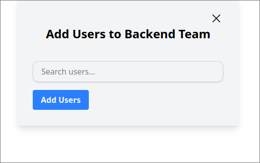

Project
A Collaborative TodoApp
A to-do list web app that helps to manage tasks in a team. Admins can create tasks and other team can see them and update the task status. This was my very first instance of building a full web app. The front end is written in TypeScript, and the back end is a Go server that stores everything in a PostgreSQL database.

The problem
Most simple to-do apps are made for one person. When a team works together, tasks end up spread across chats and notes, and it's hard to know who is doing what. I wanted one shared place where a team can plan and track its work.
Features
- Create teams and invite members
- Add, edit and delete tasks
- Assign tasks to team members
- Mark tasks as done and track progress
- User sign-up and log-in
Screenshots



Technologies used
- TypeScript
- Go
- PostgreSQL
What I learned
- I learnt how to build a REST API in Go and connect it to a React TypeScript front end
- How to design database tables for users, teams and tasks in PostgreSQL
- Had issues in managing session, solved it with JWT tokens
Like this project? Let's work together.
Email me